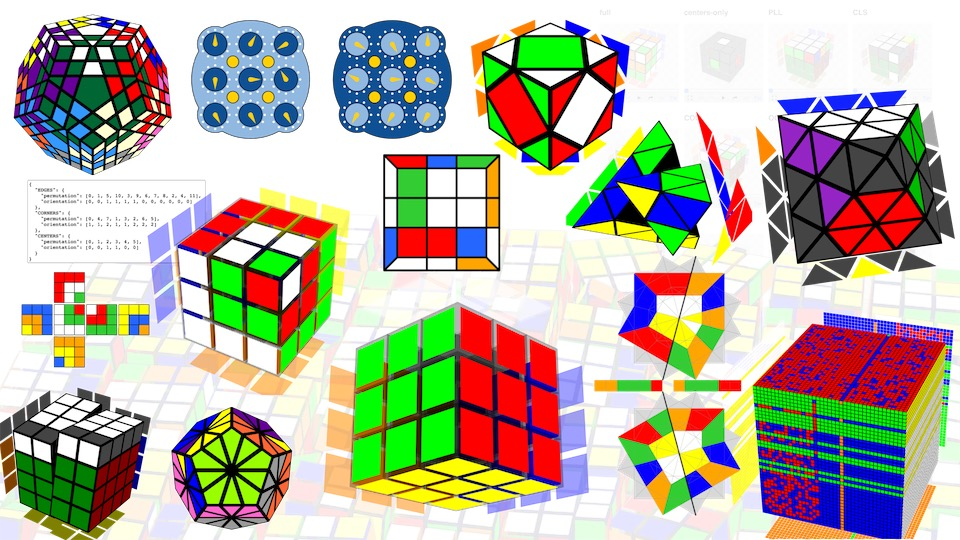

Overview



cubing.js is a collection of Javascript libraries, still under development.
Twizzle
Twizzle is based on cubing.js, and is currently being developed at src/sites/alpha.twizzle.net.
Documentation
If you want to display algs or solves, the following code is a good way to get started:
<script
src="https://cdn.cubing.net/esm/cubing/twisty"
type="module"
defer
></script>
<twisty-player alg="R U R' U R U2' R'"></twisty-player>
You can find more documentation at js.cubing.net/cubing/.
The source for the documentation site is currently inside the docs folder of this repository.
Development
Development relies on node and npm. Once you have installed those, you can run:
git clone https://github.com/cubing/cubing.js && cd cubing.js
make dev
This should run npm install and then open the sites root file at http://localhost:3333/ automatically. Any source code changes will refresh the browser. We don't yet have a development guide, so you'll have to search the code to find where features are implemented.
The core library code for cubing.js is in src/cubing To test changes, use:
make test
License
This project is licensed under the GPL license (version 3 or later). This means that this library is free to use, although you must publish any code that uses it (e.g. also put it on GitHub). See the full license for exact details.
We've selected this license in order to encourage the cubing community to work on software in a way so that everyone can contribute and extend each other's work.